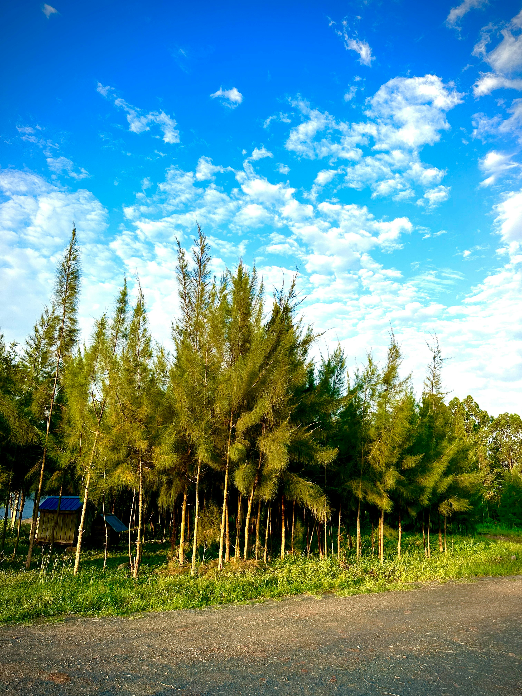

We promote tree planting for carbon credit and income generation, energy conservation through new and modern technologies, and sustainability in businesses and organisations.
We encourage a whole mindset of responsibility in support of sustainability. The aim is for the beneficiaries of your Corporate Social Responsibility to reach places of dignity and self-reliance, and ideally to be able to offer CSR to others in turn.